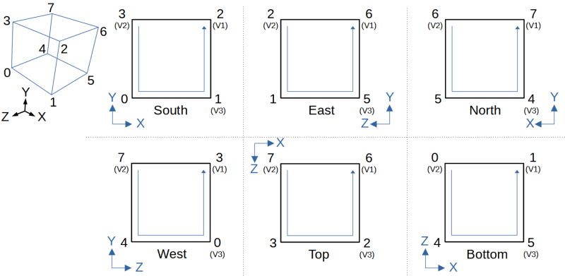

7. Mesh generation
Mesh generation is the part that converts level data into a bunch of triangles suitable for the GPU. This being the very central part of a voxel engine, you can bet there is a lot work that needs to be done. Most of this is done in the source file chunkMesh.c.
Mesh generation
Welcome to look-up table hell.
This engine supports 3 major types of voxel elements that can be converted into meshes. Each have their pros and cons:
- SOLID: these are the bread and butter of a voxel engine: a block that occupies the full
space of a voxel. It can have arbitrary textures on all 6 sides, hidden faces can be culled easily and
efficiently, and have a precise lighting model (including skylight, blocklight and ambient occlusion).
The native "resolution" of this engine is actually "half" a voxel: i.e.: a full voxel that has been split in half on the X, Y and Z axis. Which means a full voxel is made of 8 sub-voxels (i.e: you can, for example, render all kind of slabs with this: vertical, horizontal, 2x1, ...).
This type of voxel will also have greedy meshing applied on them: if the corner parameters of a quad matches nearby voxels, quads will be merged to keep vertices count under reasonable limits for the GPU.
A typical map is usually composed of 80% of these blocks, therefore they require quite a bit of work (thus, will need a lot of look-up tables).
- CUST: voxels that can have an arbirary shape and have a much greater precision than half-blocks.
The major drawback with these is that their lighting model is greatly simplified: for example, they
don't generate any ambient occlusion. Also the same skylight and blocklight is applied to the entire
model: if you were to generate a floor out of these with a block light nearby, you would be able to
see that the transition between light values is not smooth at all (and have that
Minecraft alpha feels).Hidden face culling is still performed aggressively on these: a full voxel model will therefore be culled the same way as a SOLID block.
This type includes blocks like fences, glass panes, pistons, torches, chests, doors, ...
Note: this type of blocks also includes what is known as "chiseled" blocks: slab and detailed blocks (X, Y, Z split by 8).
- QUAD: this is a very simple voxel to process: only a handful of combination exists
and all of them are trivial to process compared to the previous two. The typical use case for these
are flowers, crops, grass, rails...
Like CUST, they use a simplified lighting model: single skylight/blocklight value for the entire model, and no ambient occlusion. Technically, they could be handled as CUST, but specifying a custom model each time they are needed is way too tedious.
Note: keep in mind that all blocks must be aligned inside the voxel grid. Technically, it is possible to generate triangles at arbirary position, but the voxel manipulation functions won't be able to handle it. To place a model at a truly arbitrary position, you need to use entities: this will be covered in the next section (and have their own pros and cons).
SOLID voxel
These blocks requires quite a bit of work to be converted into meshes. First, keep this picture in mind, its information will be used extensively in the entire meshing phase.
Vertex and texture coordinates
Converting a full solid voxel into a pseudo quad (technically a GL_POINT, that will be transformed into 2 triangles in the geometry shader to a form a GL_QUAD), you need just a couple of look-up tables:
uint8_t vertex[3 *8 ] = { /* 8 vertices of a 1x1x1 cube */0 ,0 ,1 ,1 ,0 ,1 ,1 ,1 ,1 ,0 ,1 ,1 ,0 ,0 ,0 ,1 ,0 ,0 ,1 ,1 ,0 ,0 ,1 ,0 , };uint8_t cubeIndices[6 *4 ] = { /* face (quad) of cube: S, E, N, W, T, B */9 ,0 ,3 ,6 ,6 ,3 ,15 ,18 ,18 ,15 ,12 ,21 ,21 ,12 ,0 ,9 ,21 ,9 ,6 ,18 ,0 ,12 ,15 ,3 /* 3, 0, 1, 2, 2, 1, 5, 6, 6, 5, 4, 7, 7, 4, 0, 3, 7, 3, 2, 6, 0, 4, 5, 1 */ };uint8_t texCoord[] = { /* tex coord for each face: each line is a rotation, indexed by (Block.rotate&3)*8 */0 ,0 ,0 ,1 ,1 ,1 ,1 ,0 ,0 ,1 ,1 ,1 ,1 ,0 ,0 ,0 ,1 ,1 ,1 ,0 ,0 ,0 ,0 ,1 ,1 ,0 ,0 ,0 ,0 ,1 ,1 ,1 , };
It is as simple as it gets: vertex refers to the coordinates in world space (if the cube were to be rendered at 0,0,0) of each corner, then to get the 4 coordinates of a given face cubeIndices are indices within vertex[] array. The indices are pre-multiplied by 3, to avoid doing it in the many places this array is used. The order/orientation is described in this picture.
In case you are wondering, the vertices and face order have no particular meaning nor does them enable special tricks. All of this was chosen kind of arbitrarily very early in the development and turned out to be OK: neither particularly good, nor bad.
Keep in mind that coordinates for the mesh will be relative to the sub-chunk origin (a 16x16x16 chunk of terrain). In the vertex shader, each sub-chunk will receive a vec3 offset that will be added to every vertices.
The order in which vertices of a face are enumerated has a meaning though: it is done so that all the remaining information (texture coordinates, lighting, ambient occlusion) can be applied the same way on all faces.
The texCoord array encodes 4 different rotations of a texture:

Since there are 6 faces and you need 2 bits to encode each rotation, the BlockState_t.rotate field contains 12bits of information. You cannot mirror a texture though, for this you'll need to a CUST voxel.
Block and sky light
Each of the 24 vertices of a cube can have an independant block and sky light value, so that values can be smoothly interpolated across a face. Each vertex will depend on 4 sky/block light: the 4 voxels that share the vertex in the direction of the face normal. This is the purpose of the skyBlockOffset[] table (it contains too many numbers to be displayed here).
Each number in this table refers to a voxel, that is using the same coordinate system than the one used in the frustum culling:

| 18 | 19 | 20 |
| 21 | 22 | 23 |
| 24 | 25 | 26 |
| 9 | 10 | 11 |
| 12 | 14 | |
| 15 | 16 | 17 |
| 0 | 1 | 2 |
| 3 | 4 | 5 |
| 6 | 7 | 8 |
Whenever a SOLID block has at least one face visible, we extract the 26 surrounding voxels: block ID and data value (in the array blockIds3x3[]) as well as block light and sky light (in the array skyBlock[]). Each of these two arrays have 27 elements, ordered like in the table above.
skyBlockOffset[] then encodes the 4 values we need per vertex: 4 vertex per face, that means 16 values per face, 96 items in total. For block light, we take the maximum among the 4 values, for skylight we take the minimum if the value is not 0.
For example, the south face has the values 15, 16, 24, 25 for the first vertex. If you look at the face order schema, the first vertex of the south face is vertex 3 (arrow inside the square shows the order). There are 8 voxels that share this vertex, but we only take the 4 that are in the direction of the face's normal (otherwise there are too many).
Connected textures
Connected texture only applies to full block. More complex models like glass pane uses a different approach (and will be described in the CUST section).
For full blocks, the base model of its texture will be used to generate all the variations. Since there are 4 sides, it means there are 16 possible combinations. As of writing this, this is done by removing a one pixel line from a given side. These are generated in blocks.c:blockPostProcessTexture(). This is for example, what it looks like for the glass texture:

To know which texture to use, you just need to set a bitfield if the block on top (bit1), right (bit2), bottom (bit3) or left (bit4) "connects" with the current voxel. By default, U texture coordinate is set to 0, therefore, you just have to shift it by bitfield * 16 to simulate a connection.
Left, right, top and bottom are relative to a face, therefore a new look-up table is needed: offsetConnected[]. It encodes the 4 blocks to look for connection in the blockIds3x3[] table (24 elements in total). Each group of 4 elements is of course ordered top, right, bottom and left.
Half-block
Half-block is actually the native "resolution" of this engine. Seems simple enough and you might wonder
what the big deal with these ? Well, you'll have a glimpse as to why Mojang has not added vertical slab to
The first thing to keep in mind with half-block is, that
/* ... */
Ambient occlusion
/* ... */
CUST voxel
Custom voxels are blocks that cannot be represented as a SOLID voxel. They can have an arbitrary shape, but their lighting is quite simplified compared to SOLID. For example they usually do not generate ambient occlusion, unless one of their face line up with the voxel grid.
Mesh data is stored in memory and read from the main block description table (blocksTable.js). These models use the 10 bytes per voxel vertex data. In the meshing phase they are converted to 28 bytes per quad. This conversion is pretty straightforward, albeit a bit messy to look at with all these bit twiddling hacks.
There is one aspect that is not that trivial to handle though: connected models.
Connected models
Some models can have optional parts that can be removed based on nearby voxels. The overtypical example being fences:
Yet, if you look at the model definition for every type of fence, you'll see only one model being defined for each. The way it is handled is this engine is by tagging each vertex by an integer. In the model vertex data, this ID is stored in the sky/block light information, using 5 bits out of the 8 available (lighting information make no sense at this point, that's why it is perfectly safe to repurpose those fields). That means each models can have up to 32 different connected parts. As of writing this, the models that have the most parts are glass panes with 18 parts.
In case of fences, they only have 4 different parts: the 4 extensions around the center piece. In the meshing phase we check for blocks around the custom model if those optional parts can connect to. This is done in the function blockGetConnect(): the return value will be a bitfield of the parts that should be included in the chunk's mesh.
Then, in the chunk mesh generation, the unused parts are filtered using this simple test:
if (faceId >0 && (connect & (1 << (faceId-1 ))) ==0 ) { continue; }
Here, connect is the bitfield encoding the parts that should be included in the mesh. Since it is a 32bits integer, that's where the limit of 32 optional parts comes from. An ID of 0 for a face means that the face will always be included (like the central piece of a fence).
/* ... */
Greedy meshing
Greedy meshing refers to a technique used to merge quads, in order to reduce the amount of vertex data the GPU will have to process. In a typical voxel engine, GPU performance is more or less proportionnal to the number of vertices, so the lower the quad count, the better the performance.
In the initial phase for all voxel type (SOLID, CUST or QUAD), no merging is attempted. The mesh of a chunk is generated entirely with quads that fit within a voxel.
Then a second phase will try to merge them. Implementing this in 2 phases, make the implementation quite simple: you only need a hash table of the quad you can potentially merge (some quads cannot: they need to be axis-aligned and cover the full side of a voxel). The other advantage of having 2 passes is that merging can be easily disabled, just to be sure it is not the cause of some weird graphical glitch.
Then in the merging phase, you scan the entirety of that table. For each quad, you try to expand in the 2 directions perpendicular to their normal and expand them as much as possible. Merged quads will be marked as deleted, and will be removed right before sending them to the GPU. The process is really as simple as that.
Expansion needs to take into account quite a few parameters though: texture coordinates, ambient occlusion, skylight and blocklight values. Which means the merging is not as good as you might think. Still, better than doing nothing. With a typical minecraft map, this technique can reduce the number of quads by 20% to 30%.
Caves are particularly bad when it comes to merging: too many weird shapes, which generates different occlusion values for almost every quads. This is where cave culling helps a lot more.
In the fragment shader, you need to a bit more work though: you cannot rely on GL_REPEAT, since the textures of all the blocks are stored in an atlas (which is set to GL_CLAMP anyway). Merged quads will have their texture coordinates expanded to let OpenGL perform the perspective interpolation. The fragment shader will also be provided with the texture origin. Then the only thing left to do is to mod the texture coord provided to the fragment shader by 1/512 in U and 1/1024 in V and add this to the texture origin (which is, by the way, the reason why only full quads are merged).